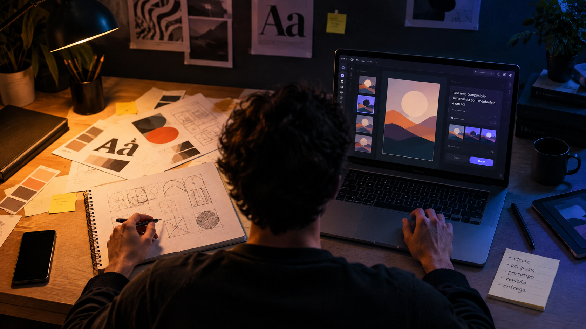

O design diante da inteligência artificial
O design sempre acompanhou as transformações das ferramentas usadas para criar, e a inteligência artificial trouxe uma nova mudança para esse cenário. Ela já faz parte da rotina dos designers brasileiros, acelerando tarefas e ampliando possibilidades, mas também transformando preços, relações com clientes e a forma como o trabalho de design é realizado.

Perspectivas sobre a IA no design

“O papel de Designers deve se deslocar para um lugar ainda mais estratégico: não é sobre saber como construir, mas sobre saber decidir o que merece ser construído.”
Luis Alt
Fundador e CEO — Livework Brasil

“A revolução da IA em design não começou nas lideranças nem nas ferramentas. Começou nas pessoas, curiosas, testando e aprendendo por conta própria.”
Fabricio Dore
Diretor de Experiência e Design — Itaú

“Com a chegada dessas ferramentas, muitos passaram a enxergar o trabalho de design como algo simples e fácil de substituir. Eu cobrava cerca de R$ 3 mil por uma identidade visual; hoje, cobro R$ 1,6 mil e, mesmo assim, ainda ouço que está caro. Pensam que basta colocar um prompt e pronto.”
Cássio Menezes
Designer gráfico